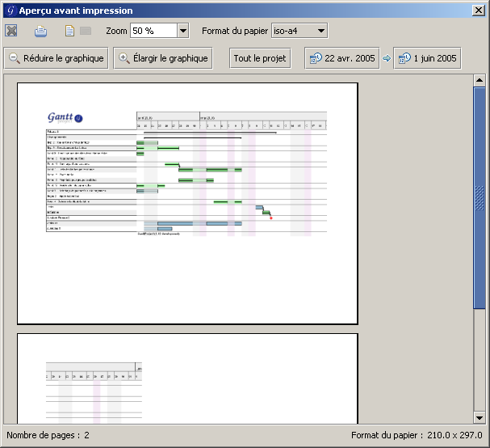

Impression
GanttProject vous permet d'imprimer vos projet.
Aperçu avant impression
- menu Fichier, Aperçu avant impression ;
- ou bouton Aperçu avant impression
 dans la barre d'outils ;
dans la barre d'outils ;
- ou bouton Aperçu avant impression dans le menu contextuel du tableau des tâches.
Voici la fenêtre d'aperçu :

Par défaut, la vue proposée pour l'impression est la même que cette dans la vue Gantt, en
ce qui concerne les dates de début et de fin du diagramme. De même, ce sont les tâches sélectionnées
(s'il y en a) qui seront imprimées.
Les fonctionnalités suivantes sont disponibles :
- orientation de la page
- cliquez sur le bouton Portrait
 pour obtenir l'orientation des pages en portrait ;
pour obtenir l'orientation des pages en portrait ;
- cliquez sur le bouton Paysage
pour obtenir l'orientation des pages en paysage.
- zoom
- la liste déroulante Zoom permet de choisir le zoom de l'aperçu. Par défaut
il est à 50 %. Si vous avez beaucoup de pages à imprimer, pour avoir une vue globale de ce
que l'impression va donner, utilisez un zoom inférieur.
- format du papier
- Afin d'améliorer l'aperçu de l'impression, il est possible de spécifier le format
du papier que vous voulez utiliser directement lors de l'aperçu.
- Attention si votre imprimante ne supporte pas le papier choisi,
ce qui sera imprimé risque de ne pas correspondre à l'aperçu.
- zone imprimée
- vous pouvez modifier la zone imprimée en modifiant les dates de début
et de fin concernant l'impression du diagramme de Gantt. Ceci permet d'imprimer
une partie du projet plutôt que sa totalité par exemple ;
- le bouton Tout le projet permet de fixer la zone d'impression à tout
le projet.
- les boutons Réduire le garphique et Elargir le graphique permettent
de modifier le zoom du projet. De cette façon, vous changez l'échelle du temps et réduisez
ou élargissez le diagramme.
- imprimer en cliquant sur le bouton Imprimer
 .
.
Impression sans aperçu
- menu Fichier, Imprimer ;
- ou bouton Imprimer dans la barre d'outils ;
- ou bouton Imprimer dans le menu contextuel du tableau des tâches.
Par défaut, l'impression se fait sur du papier A4, concerne les tâches sélectionnées et imprime l'ensemble du projet.